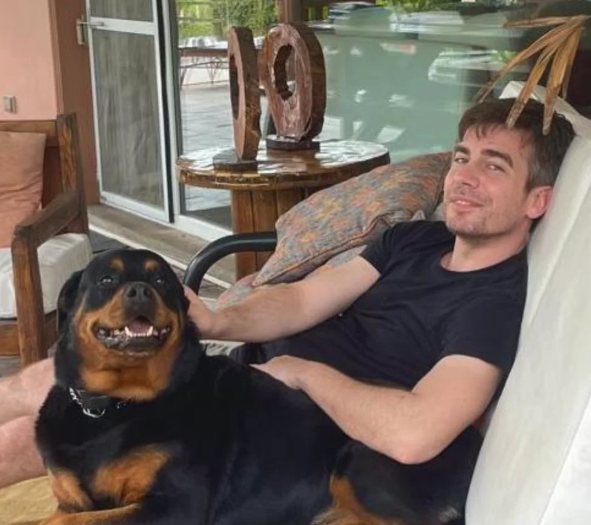

Frank Escudero / Technology &
human potential
Human ideas.
Serious systems.
I connect the imaginative part with the part that has to work. From
personalized experiences at scale to technology that helps people do
more.
✳
Curious by nature.
Hands-on by default.

Frank, off the clock.Builder. Human. Dog person.
A little perspective.
One mind.
Many moving parts.
Creative technologyAI & automationSocial innovation↘
01 / Selected experience
Make it personal.
Make it work.
Strategy matters. So does the system underneath it. My work lives
where the two meet.
ONE IDEA. MANY EXPERIENCES.
Hello,
you.
VIDEOVOICEPERSONAL
Creativity × code × scale
Creative technology / Engineering at scale
A message that feels like
it’s only for you.
I connect creative ideas with the engineering they need:
personalized video, voice and digital experiences built to work
at scale.
My focus is the system underneath the experience—reliable
infrastructure, thoughtful automation and practical delivery.
Explore my reported results ↘
02 /
Systems that give
people time back.
AI workflows, automation and infrastructure. A practical focus on
moving from an interesting prototype to something a team can
actually use.
Explore my public work ↗
Understand→Build→Measure
03 /
Useful technology.
Human context.
Alongside commercial technology, my InkuA work connects people,
learning and social innovation. The question stays the same: who
does this help?
SETOFF workshop · June 2023 ↗
02 / Scale, with context
Big numbers.
Clear provenance.
These are historical project results—not forecasts, live counters,
or promises.
180M+
personalized images
>94%
annual VoIP cost reduction*
Career figures reported and confirmed by Frank · October 2026. Not
independently audited. Individual project dates are not yet
published.
01 / Content production
Personalization, at scale.
Millions of outputs · cumulative reported figures
Reported cumulative output; both bars share the same scale.
02 / Infrastructure economics
Less overhead. More room.
Annual VoIP expenditure · € millions
*Reduction calculated from the reported baseline and upper
bound: (9 − 0.5) ÷ 9 > 94.4%.